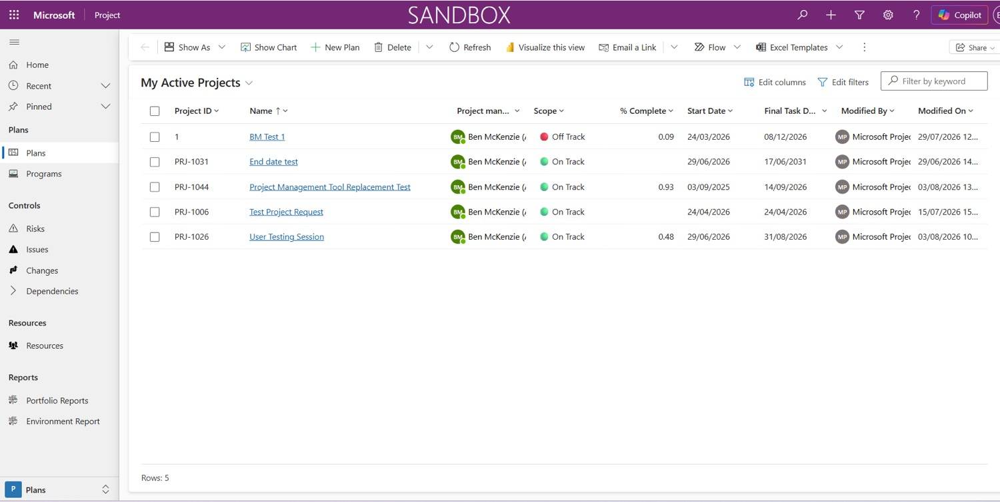
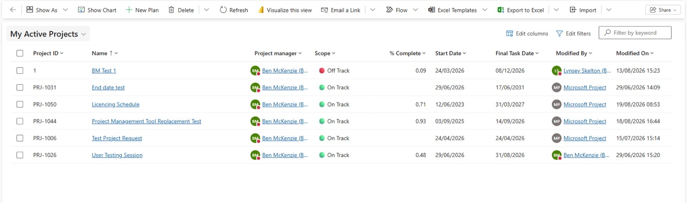
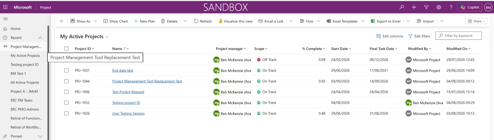

Set up
Access & finding your way
Getting into Project Hub, keeping it one click away, and knowing what you're looking at once you're in — the home page, the inside of a plan, and how to make the home page work the way you like.
Opening Project Hub
Project Hub runs in your web browser — there's nothing to install. Use the live link below (it's also the green button at the bottom of the menu on every page of this guide).
Open Project Hub (live environment) ↗
Set your browser zoom to 80%The PMO's tip for the workshops: at 80% you see much more of each form at once, with less scrolling. Press Ctrl − (or ⌘ − on a Mac) until it shows 80%.
Bookmark it
Save the link to your bookmarks bar so Project Hub always sits just under your address bar.
- Select the ☆ star at the end of the address bar.
- Select the star with the plus sign (Add this page to favourites).
- Rename the bookmark to Project Hub.
- It now shows on your bookmarks bar, just below the address bar.
The home page
Every time you open Project Hub you land here. Four things matter on this screen.
My Active Projects ˅
- 1My Active Projects — your active plans appear here automatically. Select a project's name to open it.
- 2Recent & Pinned — any plans you've opened recently, or pinned to your favourites. Pinning
- 3+ New Plan — start a new project. Creating a project
- 4Reports — the programme report dashboards. Power BI reports
Illustration based on the real screen — project names are examples.
See the real screen — from the training sandbox

Inside a plan
Open any project and you'll see the same layout every time. Learn it once and every project feels familiar.
Housing Repairs Transformation – Saved
Project IDYou
Project managerOn Track
Overall Health
- 1Command bar — Save & Close, Share (permissions) and Flow (e.g. escalating a risk) live here.
- 2Header — the Project ID (you'll need it for naming risks and issues), project manager and overall health.
- 3Project Lifecycle — which of the five stages the project is in. You move it on yourself. Lifecycle
- 4Tabs — each part of the project record. See the table below for what each is for.
| Tab | What it's for | Guide |
|---|---|---|
| Summary | Name, background, type, dates, programme and ownership. | Summary tab |
| Business Case | Project background and scope (what's in, what's out). | Business Case |
| Financials | Budget, spend, benefits and funding — optional. | Financials |
| Tasks | Your schedule, in Microsoft Planner. | Tasks |
| Risks | Every project risk, scored on a 4×4 matrix. | Risks |
| Issues | Every project issue, prioritised High / Moderate / Low. | Issues |
| Status | Your status updates for Programme and Project Boards. | Status |
| Status Report | The Highlight Report and other report pages, inside the plan. | Status Report |
| Baseline | Not covered in the training. | |
| Dependencies | Not covered in the training. | |
Customise the home page columns
Choose which columns show in your project list — for example, add Total Budget so you can see it at a glance.
Add a column
- Select Edit columns above the project list.
- Select + Add columns — every field you could show is listed.
- Pick the one you want (e.g. Total Budget). It appears in the Edit columns panel.
- Select Apply. The column now shows on your home page.
Go back to the default
- Select Edit columns.
- Select Reset to default.
- Select Apply.
See the real screen — the Edit columns panel

Pin your projects
Pin the plans you open most so they're always in the left rail.
- Select the ˄ arrow next to Recent in the left rail.
- Select the 📌 pin to the left of the plan you want to keep.
- Open the arrow next to Pinned — your plan is now there.
See the real screen — pinning from Recent
